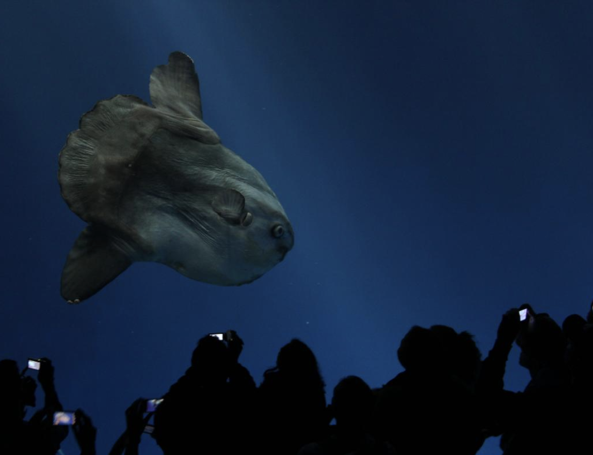

Sunfish are not widely held in aquarium exhibits, due to the unique and demanding requirements of their care. Some Asian aquaria display them, particularly in Japan. The Kaiyukan Aquarium in Osaka is one of few aquariums with M. mola on display, where it is reportedly as popular an attraction as the larger whale sharks. The Lisbon Oceanarium in Portugal has sunfish showcased in the main tank, and in Spain, the Valencia Oceanogràfic has specimens of sunfish. The Nordsøen Oceanarium in the northern town of Hirtshals in Denmark is also famous for its sunfish.
While the first ocean sunfish to be held in an aquarium in the United States is claimed to have arrived at the Monterey Bay Aquarium in August 1986, other specimens have previously been held at other locations. Marineland of the Pacific, closed since 1998 and located on the Palos Verdes Peninsula in Los Angeles County, California, held at least one ocean sunfish by 1961, and in 1964 held a 650-pound (290 kg) specimen, claimed as the largest ever captured at that time.
Because sunfish had not been kept in captivity on a large scale before, the staff at Monterey Bay was forced to innovate and create their own methods for capture, feeding, and parasite control. By 1998, these issues were overcome, and the aquarium was able to hold a specimen for more than a year, later releasing it after its weight increased by more than 14 times. Mola mola has since become a permanent feature of the Open Sea exhibit. Monterey Bay Aquarium’s largest sunfish specimen was euthanized on February 14, 2008, after an extended period of poor health.
A major concern to curators is preventive measures taken to keep specimens in captivity from injuring themselves by rubbing against the walls of a tank, since ocean sunfish cannot easily maneuver their bodies. In a smaller tank, hanging a vinyl curtain has been used as a stopgap measure to convert a cuboid tank to a rounded shape and prevent the fish from scraping against the sides. A more effective solution is simply to provide enough room for the sunfish to swim in wide circles.
